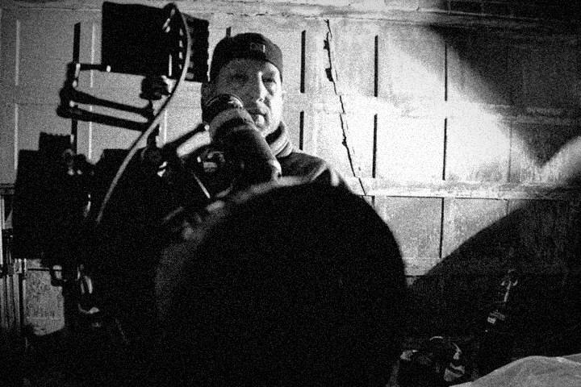

On a quiet Kentucky farm, a grieving father faces the weight of regret, and the silence it leaves behind.
Exploring the human experience through creative storytelling.
On a quiet Kentucky farm, a grieving father faces the weight of regret, and the silence it leaves behind.

This documentary explores the horrific Carrollton, Kentucky bus crash of May 14, 1988, which killed 27 people (mostly children) and injured nearly 35 others, the worst drunk-driving related accident in U.S. history.

A short documentary traveling through Rajasthan, India.
Option D Films is an independent film production company based in Louisville, Kentucky, focused on telling stories about people, places, and the experiences that connect us.
From documentary and human-interest stories to narrative and commercial work, we approach every project with the same goal, to find something genuine and give it a thoughtful, creative voice.
Exploring the human experience through creative storytelling.

For screenings, festival inquiries, or collaborations.
optiondfilms@gmail.com